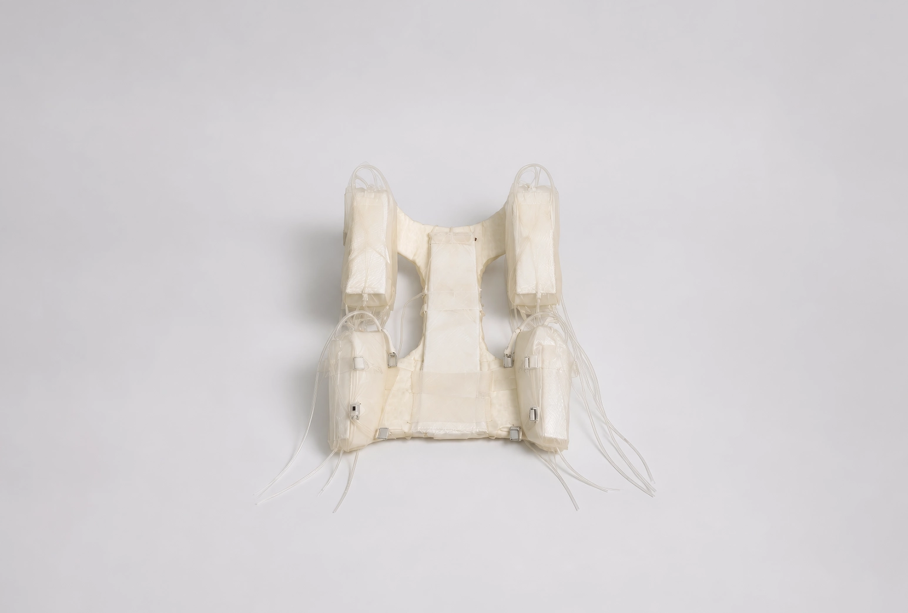

Variable Humans, 2049
가변하는 인간과 남겨진 잔흔, 2049
2049.01.24 - 2049.02.03
전시 정보
Variable Humans: 가변하는 인간과 남겨진 잔흔은 주거비 상승과 초소형 주거의 확산이 지속된 미래의 서울을 배경으로, 협소한 공간에 적응하기 위해 변화한 인간과 그들이 남긴 장치를 기록한 아카이브 전시이다. 전시는 미래의 도시에서 발견된 신체 적응 장치와 신체 가변 보조 기구를 통해, 도시 환경이 인간의 신체와 생활 방식에 어떠한 변화를 남기는지를 탐구한다. 오늘날 도시는 끊임없이 밀집되고 있으며, 사람들은 더 넓은 공간보다 원하는 지역에서의 삶을 선택한다. 이 과정에서 주거 공간은 점차 축소되고, 인간은 공간을 바꾸기보다 스스로를 공간에 맞추는 방향으로 적응하기 시작한다. 본 전시는 이러한 사회적 흐름이 지속되는 경우 인간은 어떤 방식으로 변화하게 될 것인가라는 질문에서 출발한다. 전시에 등장하는 장치들은 미래 기술이나 상상이 아닌, 극단적인 도시 환경 속에서 살아가기 위해 인간이 선택한 적응의 결과물이다. 이를 통해 공간이 인간을 어떻게 변화시키는지, 그리고 우리가 당연하게 받아들이는 도시 환경을 새로운 시선으로 바라볼 가능성을 제안한다. 전시는 서울에서 수집된 장치와 사용 기록을 바탕으로, 협소한 주거 환경에 적응해 살아온 사람들의 생활과 신체 변화를 추적한다. 수집된 장치는 사용 목적과 신체에 개입하는 방식에 따라 신체적응 장치(Adaptive Device)와 신체가변보조기구(Variable Assistive Devices)로 분류된다. 신체적응 장치(Adaptive Device)는 부족한 공간을 대신하기 위해 신체의 자세와 생활 방식을 변화시키는 장치이다. 침대, 의자, 책상과 같은 기존 가구의 기능을 신체에 결합하거나 몸을 접고 고정함으로써 제한된 공간에서도 수면, 식사, 휴식 등의 일상생활을 가능하게 한다. 신체가변보조기구(Variable Assistive Devices)는 장기간의 공간 적응으로 변화한 신체를 보조하거나, 제한된 공간에서도 기존의 생활과 취향을 유지하기 위해 제작된 장치이다. 변화한 신체를 지지하는 동시에 수집, 보관, 감상과 같은 개인의 생활 방식을 신체 위로 확장한다. 수집된 장치와 사용 흔적을 분석한 결과, 사용자들의 적응 방식에서는 크게 두 가지 유형이 확인된다. 생존형 압축은 제한된 공간에서 기본적인 생활을 유지하기 위해 자신의 신체와 생활 방식을 공간에 맞게 변화시킨 유형이다. 반면 취향 유지형 압축은 협소한 환경에서도 자신의 취향과 일상을 포기하지 않기 위해 신체를 새로운 생활 공간으로 활용한 유형이다. 두 유형은 목적과 방식에는 차이가 있지만, 공간을 변화시키는 대신 인간이 스스로를 변화시켰다는 공통된 적응의 흔적을 보여준다.
기획 의도
도시는 오랫동안 한정된 공간 안에 더 많은 사람과 기능을 수용하는 방향으로 변화해왔다. 주거 공간 역시 점차 작아졌지만, 사람들은 불편함을 이유로 도시를 떠나기보다 주어진 환경에 자신의 생활 방식을 맞추며 적응해왔다. 우리는 일반적으로 좁은 공간의 문제를 가구의 배치나 공간 활용의 문제로 바라본다. 그러나 공간이 계속해서 줄어든다면, 어느 순간 더 이상 공간을 효율적으로 사용하는 것만으로는 해결할 수 없는 지점에 도달한다. 이때 변화해야 하는 대상은 공간이 아니라 그 안에서 생활하는 인간이 된다. 《VARIABLE HUMANS》는 바로 이 지점에서 출발한다. 인간은 어디까지 공간에 자신을 맞추며 살아갈 수 있는가? 전시는 협소한 주거 환경에 적응하는 과정에서 남겨진 장치와 흔적을 통해, 도시의 변화가 단순히 주거 형태만을 바꾸는 것이 아니라 인간의 자세와 움직임, 생활 방식과 신체에까지 영향을 미칠 수 있음을 보여준다. 이를 통해 우리가 공간에 적응하고 있다고 생각했던 일상의 선택들이 결국 공간이 인간을 변화시키는 과정일 수 있다는 가능성을 살펴보고자 한다.
전시 구성
Adaptive Device
Variable Assistive Devices
본 전시는 미래 서울에서 수집된 기록과 신체 적응 장치를 바탕으로, 도시 환경이 인간의 신체와 생활 방식에 남긴 변화를 두개의 흐름으로 구성한다. 각 섹션은 공간의 변화가 인간에게 어떠한 적응을 요구했는지, 그리고 그 적응이 어떻게 새로운 생활 방식과 신체의 변화로 이어졌는지를 순차적으로 보여준다.
압축된 사람들
초소형 주거는 모든 사람에게 동일한 적응을 요구하지 않는다. 누군가는 제한된 공간 속에서 최소한의 생활을 유지하기 위해 자신의 몸을 변화시키고, 또 다른 누군가는 협소한 공간에서도 기존의 취향과 생활 방식을 포기하지 않기 위해 새로운 장치를 만들어 사용한다. 본 섹션은 도시 환경에 적응한 인간을 생존형 압축과 취향 유지형 압축이라는 두 가지 유형으로 분류하여, 같은 공간 속에서도 서로 다른 방식으로 변화한 인간의 모습을 살펴본다.
생존형 압축
생존형 압축은 협소한 공간에서 기본적인 생활을 유지하기 위해 신체를 공간에 맞추는 적응 방식이다. 이들은 침대와 의자, 책상과 같은 생활 공간을 확보하기보다 자신의 몸을 변화시키는 선택을 한다. 신체를 접고, 매달리고, 구부린 자세를 유지하며 공간의 제약을 극복하고자 한다. 이들이 사용하는 장치는 공간을 절약하고 최소한의 생활을 가능하게 하는 기능을 중심으로 설계되었다. 반복되는 사용은 자세와 신체 구조를 변화시키며, 몸은 점차 공간에 최적화된 형태로 적응해 간다. 생존형 압축은 공간 부족이라는 환경적 문제에 대응하기 위해 나타난 가장 기본적인 적응 방식이다. 대표 장치로는 Hanging Rest System,Shoulder Folder, Spine Curver, Lap Folding Bed, Wall Lean Support, Sit-Sleep Frame 등이 있다.
취향유지형 압축
취향 유지형 압축은 생존을 넘어, 협소한 공간에서도 자신의 취향과 생활 방식을 유지하기 위해 나타난 적응 방식이다. 이들은 공간이 부족하다는 이유로 수집과 감상, 휴식, 개인적인 일상을 포기하지 않는다. 대신 자신의 몸을 새로운 수납 공간이자 전시 공간으로 확장하여 생활을 이어간다. 이들이 사용하는 장치는 공간의 기능을 몸으로 옮기는 데 그치지 않고, 개인의 취향과 정체성을 유지하는 역할을 수행한다. 좋아하는 물건을 몸에 전시하거나, 이동 중에도 감상과 휴식을 지속할 수 있도록 설계된 장치들은 좁은 공간 속에서도 개인성을 지키려는 새로운 생활 방식을 보여준다. 취향 유지형 압축은 공간이 인간의 취향까지 제한하는 시대에 등장한 또 다른 형태의 적응이다. 대표 장치로는 Human Display Cabinet, Body Pocket Frame Cinema Cocoon, Storage Rest Capsule, Skirt Wardrobe 등이 있다.
아카이브 방식
본 전시에 소개되는 장치들은 미래 도시에서 실제로 사용되었던 생활 도구라는 가정 아래 기록되었다. 각각의 장치는 하나의 제품이 아니라 특정한 생활 환경과 사용자의 적응 방식을 보여주는 생활의 흔적으로 분류된다. 아카이브는 동일한 기준으로 수집·기록되며, 장치의 제작 연도와 분류, 사용 목적, 신체 변화, 재료, 발견 위치 등을 함께 제시한다. 이러한 기록 방식을 통해 관람자는 장치의 형태뿐만 아니라 그것이 등장하게 된 사회적 배경과 사용자의 생활 방식을 함께 읽어낼 수 있다. 전시에 사용된 기록은 박물관의 소장품 관리 체계를 참고하여 구성되었으며, 모든 장치는 고유한 식별 번호와 분류 체계를 갖는다. 제품 사진과 사용 사진 등 다양한 자료를 함께 제시하여 하나의 장치가 가진 맥락을 입체적으로 보여준다. 본 아카이브는 미래의 기술을 소개하는 것이 아니라, 도시 환경에 적응하며 살아간 인간의 흔적을 기록하는 것을 목적으로 한다. 남겨진 장치들은 기능을 설명하는 물건이 아니라, 사회를 살아간 한 인간의 생활 방식과 선택을 증언하는 기록물로 읽힌다.